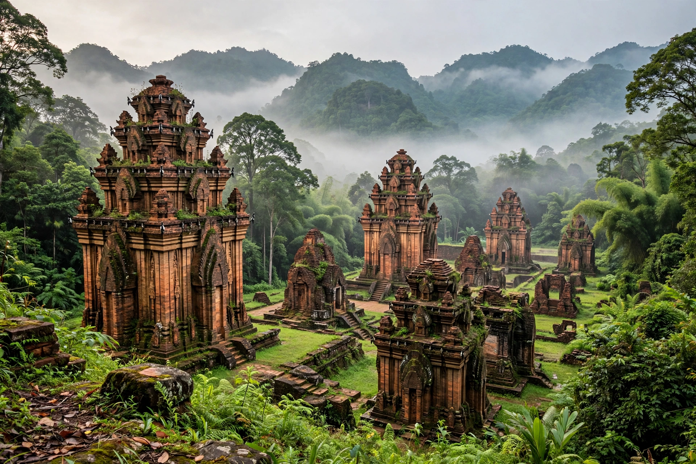

Mỹ Sơn (Vietnamese pronunciation: [mǐˀ səːŋ]) is a cluster of abandoned and partially ruined Hindu temples in central Vietnam, constructed between the 4th and 13th centuries by the kings of Champa, an Indianized kingdom of the Cham people. The temples are dedicated to the Hindu god Shiva, known locally as Bhadresvara.

| Location | Quảng Nam Province, Vietnam |
|---|---|
| Coordinates | 15°46′N 108°07′E |
| Built | 4th–13th centuries |
| Culture | Champa |
| UNESCO | World Heritage Site (1999, criteria ii, iii) |
Located in a valley near the village of Duy Phú, about 69 km southwest of Da Nang and 10 km from the historic town of Trà Kiệu, Mỹ Sơn was the religious and political capital of Champa for most of its existence. Early temples were of wood; after a fire, King Sambhuvarman rebuilt in brick in the 7th century. Inscriptions in Sanskrit and Cham record royal dedications and history.
More than 70 structures survive in groups labelled A–G, built of fired red brick with sandstone sculptures, without visible mortar. The main tower (kalan) symbolises Mount Meru. The site was heavily damaged by US bombing during the Vietnam War in 1969, which destroyed the largest temple. Unexploded ordnance and looting have also affected it. Conservation has been supported by UNESCO, Italy, Japan and other partners.